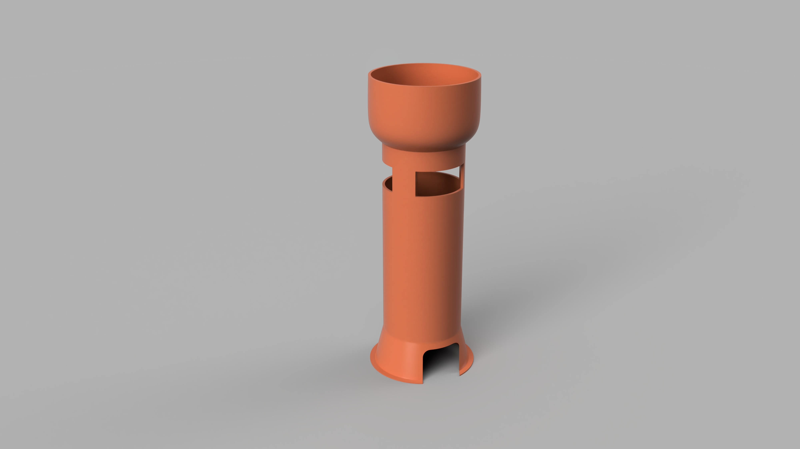

3D tisknutelná váza podle ručnà skici
do 24 hodin. Klienta jsem provedl celým procesem a dodal STL, STEP a 3MF soubory připravené pro výrobu.


Max mě kontaktoval s ručně kresleným náčrtem velké kulaté vázy a požádal mě, zda bych ji dokázal převést do 3D modelu připraveného pro tisk – a to do 24 hodin. Nikdy si dÅ™Ãve CAD model neobjednával, takže jsem ho celým procesem trpělivě provedl krok za krokem.
Poslal mi 2 jednoduché skici a na jejich základě jsem vymodeloval celou geometrii s plynulými přechody a proporčně odpovÃdajÃcÃmi rozměry – s drobnými úpravami pro lepÅ¡Ã tisknutelnost.
Model jsem dodal ve formátech STL, STEP a 3MF, připravený pro jakoukoli online 3D tiskovou službu.
📠V portfoliu můžete vidět:
– Jeden z původnÃch ručně kreslených návrhů
– Druhou skicu s pohledem z jiného úhlu a rozměry
– Náhled finálnÃho 3D modelu vázy ve formě renderu
Byl to jednoduchý, ale velmi pÅ™Ãjemný projekt – skvělý pÅ™Ãklad toho, jak pomáhám klientům bez zkuÅ¡enostà s CADem přivést jejich nápady k životu – rychle, přehledně a s důrazem na vyrobitelnost.
Potřebujete vlastnà model pro 3D tisk? Klidně i jen podle hrubého náčrtu? Ozvěte se – rád pomohu.